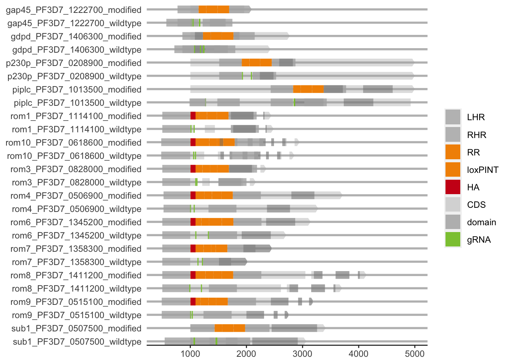
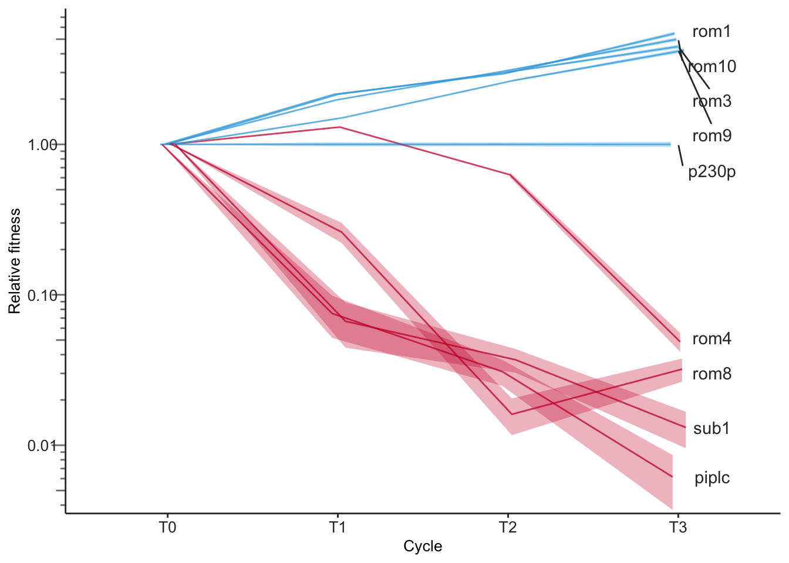
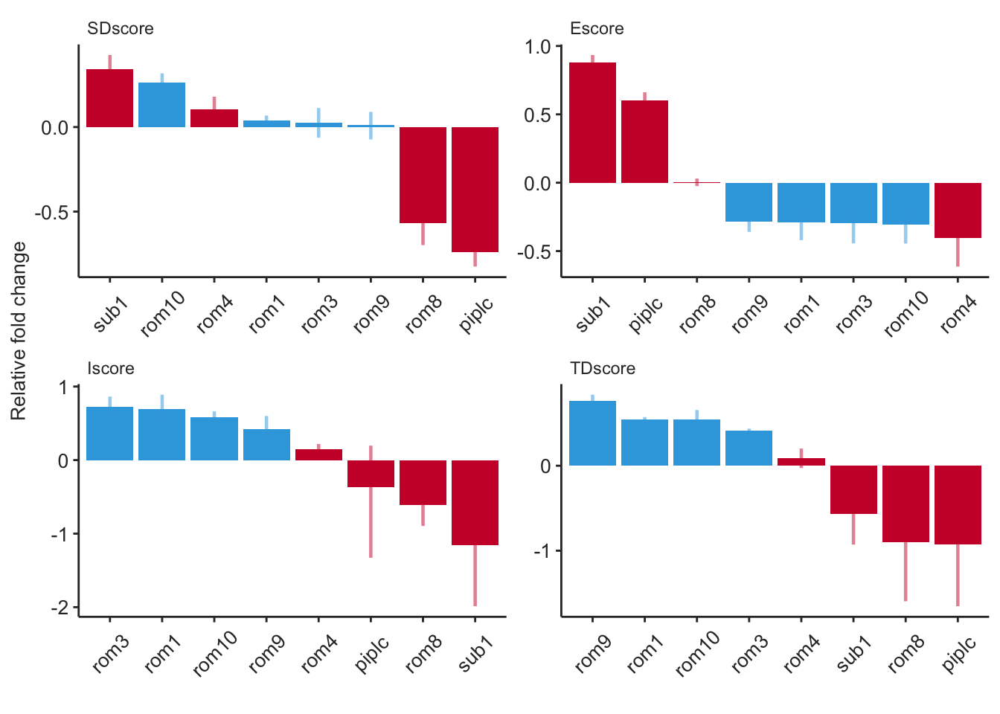

The following objects are masked from 'package:plyr':
arrange, count, desc, failwith, id, mutate, rename, summarise,
summarize
The following objects are masked from 'package:stats':
filter, lag
The following objects are masked from 'package:base':
intersect, setdiff, setequal, union
library("gggenes")library("grateful")
plotting floxing strategies
Figure 3A
# Load gene data from a CSV file into 'gene' dataframegene <-read.csv("./rawdata/rom_gene_v200124.csv")# Load CDS (coding sequences) data from a CSV file into 'CDS' dataframeCDS <-read.csv("./rawdata/rom_cds_v200124.csv")# Filter out specific subnames from the CDS dataframeCDS <- CDS %>%filter(!subname %in%c("barR","barD","loxP"))# Create a plot of genes using ggplot2pgenes <-ggplot(gene, aes(xmin = start, xmax = end, y = name)) +# Organize genes into separate panels, allowing y-axis to scale freely in each and arranging panels in a single columnfacet_wrap(~ name, scale ="free_y", ncol =1) +# Add arrows to represent subgenes; however, the related 'geom_gene_arrow' line is commented out and not usedgeom_subgene_arrow(data = CDS,aes(xmin = start, xmax = end, y = name, xsubmin = substart, xsubmax = subend, fill = subname, alpha = subname),color =NA, # No border color for arrowsarrowhead_height =unit(3, "mm"), arrowhead_width =unit(1, "mm")) +# Manual color scale for different subgene typesscale_fill_manual(breaks =c("LHR", "RHR", "RR", "loxP", "loxPINT", "HA", "CDS", "domain", "barD", "barR", "gRNA"),values=c("#B1B1B1", "#B1B1B1", "#F29100", "white", "#F29100", "#CD001A", "#B1B1B1", "#808080", "#6F6F6E", "#37A6DE", "#8CC63F")) +# Manual alpha scale for different subgene types, controlling their transparencyscale_alpha_manual(breaks =c("LHR", "RHR", "RR", "loxP", "loxPINT", "HA", "CDS", "domain", "barD", "barR", "gRNA"),values=c(0.8, 0.8, 1, 0.8, 1, 1, 0.4, 0.5, 0.8, 0.8, 1)) +# Apply custom theme for gene plotstheme_genes() +# Customize theme: remove y-axis title and legend titletheme(axis.title.y =element_blank(), legend.title =element_blank())# Display the plotpgenes
Warning: Subgene 4 (5417..5495) breaks boundaries of gene (450..5000), skipping
Subgene 5 (5687..5748) breaks boundaries of gene (450..5000), skipping
Subgene 6 (5864..5954) breaks boundaries of gene (450..5000), skipping
Warning: Subgene 2 (5072..5150) breaks boundaries of gene (450..5000), skipping
Subgene 3 (5342..5403) breaks boundaries of gene (450..5000), skipping
Subgene 4 (5519..5609) breaks boundaries of gene (450..5000), skipping

# Save the plot to a PDF file with specified dimensionsggsave("./outplots/pgenes.pdf", width =6, height =4)
Warning: Subgene 4 (5417..5495) breaks boundaries of gene (450..5000), skipping
Subgene 5 (5687..5748) breaks boundaries of gene (450..5000), skipping
Subgene 6 (5864..5954) breaks boundaries of gene (450..5000), skipping
Warning: Subgene 2 (5072..5150) breaks boundaries of gene (450..5000), skipping
Subgene 3 (5342..5403) breaks boundaries of gene (450..5000), skipping
Subgene 4 (5519..5609) breaks boundaries of gene (450..5000), skipping
Barseq analysis
# Load the barseq dataset from a CSV filebarseq <-read.csv(file="./rawdata/barseq_v200124.csv", header = T)# Process the barseq dataset to get distinct combinations of Replicate, Timepoint, and Treatmentbarseq %>%distinct(Replicate, Timepoint, Treatment) %>%# Group by Timepoint and Treatment to organize datagroup_by(Timepoint, Treatment) %>%# Summarize data to count the number of replicates for each Timepoint and Treatment combinationsummarize(Replicates =n()) %>%# Ungroup to remove the grouping structure and return the data frame to a standard formatungroup()
`summarise()` has grouped output by 'Timepoint'. You can override using the
`.groups` argument.
Check for integration and excision for each gene at 24 h post-RAP treatment
Figure 3D
# Filter out specific sample due to anomalies, focusing on T0 timepoint and significant countsintexc <- barseq %>%filter(!Sample =="T0RAP-2", # Exclude problematic sample Timepoint =="T0", # Focus on T0 timepoint (T0sch for Supplementary Figure S4) count >=0.0001*(sum(count))) %>%# Include significant counts onlygroup_by(Sample,Timepoint,Treatment,Replicate) %>%mutate(total =sum(count), # Calculate total counts per groupp = (count/total)) %>%# Calculate proportion of each count over totalgroup_by(Sample,Timepoint,Treatment,Replicate,Gene) %>%mutate(bar.ratio = count/sum(count)) # Calculate gene-specific count ratio# Summarize data by key variables, calculate means and standard errorssumm.intexc <- intexc %>%group_by(Timepoint,Treatment,Gene,barcodetype) %>%summarise(p.mean=mean(p), # Mean proportionratio.mean=mean(bar.ratio), # Mean ration=n(), # Sample sizep.se=sd(p)/sqrt(n), # Standard error of proportionratio.se=sd(bar.ratio)/sqrt(n)) # Standard error of ratio
`summarise()` has grouped output by 'Timepoint', 'Treatment', 'Gene'. You can
override using the `.groups` argument.
# Prepare ratio mean for y-axis labels in the ploty_label <- summ.intexc %>%filter(barcodetype=="boxit+") %>%select(ratio.mean)
Profile the growth fitness of each mutant across four erythrocytic cycles
Figure 3E
# Filter data for specific conditions and calculate proportion of counts by samplebar.fitness <- barseq %>%filter(Treatment =="RAP+", barcodetype =="boxit+", Replicate ==1, Timepoint %in%c("T0","T1","T2","T3"), !Gene %in%c("gap45","gdpd","rom6","rom7")) %>%group_by(Sample) %>%mutate(total =sum(count), p = count / total)# Filter data for the start timepoint (T0)start = bar.fitness %>%filter(Timepoint =="T0")# Join filtered data with start data and calculate ratiofrom_start = bar.fitness %>%inner_join(start, by =c("Gene")) %>%mutate(ratio = p.x / p.y)# Filter data for control genecontrolgene = from_start %>%filter(Gene =="p230p")# Join data with control gene data by timepoint and calculate ratiofrom_start_by_p230p = from_start %>%inner_join(controlgene, by =c("Timepoint.x"))# Calculate ratio, variance of ratio, and confidence interval; label final timepoint genesfrom_start_by_p230p = from_start_by_p230p %>%mutate(ratio2 = ratio.x / ratio.y, var_ratio2 = ((ratio.x^2* ratio.y * (1- ratio.y) / total.y.y) + (ratio.y^2* ratio.x * (1- ratio.x) / total.x.y)) / (ratio.y^2)^2,ratio2_low = ratio2 -2*sqrt(var_ratio2), ratio2_high = ratio2 +2*sqrt(var_ratio2), label =ifelse(Timepoint.x =="T3", Gene.x, NA))
Warning: There were 2 warnings in `mutate()`.
The first warning was:
ℹ In argument: `ratio2_low = ratio2 - 2 * sqrt(var_ratio2)`.
Caused by warning in `sqrt()`:
! NaNs produced
ℹ Run `dplyr::last_dplyr_warnings()` to see the 1 remaining warning.
# Determine essentiality based on fitness ratio at final timepointessentiality <- from_start_by_p230p %>%mutate(essentiality =ifelse(ratio2 <0.5, "#CC1236", "#35A8E0")) %>%filter(Timepoint.x =="T3") %>%select(Gene.x, essentiality) %>% tibble::deframe()# Set position dodge for plot elements to avoid overlappd <-position_dodge(0.1)# Function to calculate log scale breaksbreaks_log10 <-function(x) { low <-floor(log10(min(x))) high <-ceiling(log10(max(x)))10^(seq.int(low, high))}# Create the fitness plotpfitness <-ggplot(from_start_by_p230p, aes(x = Timepoint.x, y = ratio2, group = Gene.x)) +geom_line(position = pd, alpha =0.75, aes(color = Gene.x)) +# Draw lines for each genegeom_ribbon(aes(ymin =pmax(1e-9, ratio2_low), ymax = ratio2_high, fill = Gene.x), position = pd, alpha =0.3) +# Add shaded area for confidence intervalscale_color_manual(values = essentiality) +# Set line colors based on essentialityscale_fill_manual(values = essentiality) +# Set fill colors based on essentialitytheme(axis.title.x =element_text(size =10), # X-axis title customizationaxis.title.y =element_text(size =10), # Y-axis title customizationaxis.ticks.y =element_blank(), # Hide y-axis ticksaxis.ticks.x =element_line(colour ="gray20"), # Customize x-axis tickslegend.position ="none", # Hide legendaxis.text =element_text(size =10, color ="gray20"), # Customize axis textaxis.line =element_line(colour ="gray20"), # Customize axis linespanel.grid =element_blank(), # Remove grid linespanel.background =element_blank()) +# Transparent backgroundxlab("Cycle") +# X-axis labelylab("Relative fitness") +# Y-axis labelscale_y_log10(breaks = breaks_log10) +# Log scale for y-axisannotation_logticks(sides ="l", color ="gray50", outside =TRUE, size =0.5,long =unit(0.3, "cm"), mid =unit(0.2, "cm"), short =unit(0.1, "cm")) +# Add log tickscoord_cartesian(ylim =c(0.5e-2, NA), clip ="off") +# Adjust y-axis limits and disable clippinggeom_label_repel(aes(label = label), color ="gray20", nudge_x =0.2, na.rm =TRUE,label.size =NA, fill =NA, direction ="y") # Add labels with repulsion for claritypfitness # Display the plot

# Save the plot to a PDF fileggsave("./outplots/pfitness_binom.pdf", width =5, height =4)
Assess mutant phenotypes within the erythrocytic cycle by scoring the fitness of each mutant at four within-cycle timepoints
Figure 3F
# Filter dataset for specified conditions and calculate proportion (p) of counts by gene and replicatebar.phenotyping <- barseq %>%filter(Treatment =="RAP+", barcodetype =="boxit+", !Gene %in%c("gap45","gdpd","rom6","rom7"), Timepoint %in%c("T0","T0sz","T0nsz","T1","T1sz")) %>%group_by(Replicate, Gene) %>%mutate(total =sum(count), p = count / total) %>%# Calculate total counts and proportion for each gene and replicategroup_by(Replicate, Gene) %>%mutate(SD.FC = p[Timepoint =="T0sz"] / p[Timepoint =="T0"], # Calculate fold change for stress dependencyE.FC = p[Timepoint =="T0nsz"] / p[Timepoint =="T0sz"], # Calculate fold change for enduranceI.FC = p[Timepoint =="T1"] / p[Timepoint =="T0sz"], # Calculate fold change for initiationTD.FC = p[Timepoint =="T1sz"] / p[Timepoint =="T1"]) %>%# Calculate fold change for termination dependencygroup_by(Replicate) %>%mutate(SDscore = SD.FC / SD.FC[Gene =="p230p"], # Normalize scores by control gene p230pEscore = E.FC / E.FC[Gene =="p230p"],Iscore = I.FC / I.FC[Gene =="p230p"],TDscore = TD.FC / TD.FC[Gene =="p230p"]) %>%pivot_longer(cols =c(SDscore, Escore, Iscore, TDscore), names_to ="score") # Pivot data for scoring# Summarize phenotyping scores by gene and score type, calculating mean and standard errorsumm.phenotyping <- bar.phenotyping %>%filter(Timepoint =="T0") %>%group_by(Gene, score) %>%summarise(score.mean =mean(value), n =n(), score.se =sd(value) /sqrt(n))
`summarise()` has grouped output by 'Gene'. You can override using the
`.groups` argument.
# Create phenotyping plot excluding control gene, with genes reordered by mean score within each score typepphenotyping <-ggplot(summ.phenotyping %>%filter(!Gene %in%c("p230p")), aes(x =reorder_within(Gene, -score.mean, score), y =log2(score.mean))) +geom_bar(stat ="identity", aes(fill = Gene)) +# Bar plot with genes colored by themselvesgeom_linerange(aes(x =reorder_within(Gene, -score.mean, score), ymin =log2(score.mean - score.se), ymax =log2(score.mean + score.se), color = Gene), alpha =0.5, size = .8) +# Error bars for each genescale_fill_manual(values = essentiality) +# Set custom colors for barsscale_color_manual(values = essentiality) +# Set custom colors for error barstheme(axis.title.x =element_text(size =10, color ="gray20"), # Customize X-axis titleaxis.title.y =element_text(size =10, color ="gray20"), # Customize Y-axis titlelegend.position ="none", # Remove legendlegend.background =element_blank(), # Remove legend backgroundlegend.key =element_blank(), # Remove legend key backgroundlegend.key.width =unit(1.25, "cm"), # Set width of legend keysaxis.text =element_text(size =10, color ="gray20"), # Customize axis textaxis.text.x =element_text(angle =45, vjust =0.5), # Tilt X-axis text for readabilityaxis.ticks =element_line(colour ="gray20"), # Customize axis ticksaxis.line =element_line(colour ="gray20"), # Customize axis line colorstrip.background =element_blank(), # Remove background from facet labelsstrip.text =element_text(colour ="gray20", hjust =0), # Customize facet label textpanel.grid =element_blank(), # Remove gridlinespanel.background =element_blank()) +# Remove panel backgroundxlab(" ") +# Remove X-axis labelylab("Relative fold change") +# Y-axis label for fold changefacet_wrap(~factor(score, c("SDscore", "Escore", "Iscore", "TDscore")), nrow =2, scales ="free") +# Facet plot by score typescale_x_reordered() # Use reordered scale for X-axispphenotyping # Display the plot

# Save the plot to a PDF fileggsave("./outplots/pphenotyping.pdf", width =6.5, height =3.5)# Write the summary data to a CSV filewrite.csv(summ.phenotyping, file="./outdata/summ.phenotyping.csv")
Allaire, JJ, Yihui Xie, Christophe Dervieux, Jonathan McPherson, Javier Luraschi, Kevin Ushey, Aron Atkins, et al. 2023. rmarkdown: Dynamic Documents for r. https://github.com/rstudio/rmarkdown.
R Core Team. 2023. R: A Language and Environment for Statistical Computing. Vienna, Austria: R Foundation for Statistical Computing. https://www.R-project.org/.
Silge, Julia, and David Robinson. 2016. “tidytext: Text Mining and Analysis Using Tidy Data Principles in r.”JOSS 1 (3). https://doi.org/10.21105/joss.00037.
Slowikowski, Kamil. 2024. ggrepel: Automatically Position Non-Overlapping Text Labels with “ggplot2”. https://ggrepel.slowkow.com/.
Wickham, Hadley, Mara Averick, Jennifer Bryan, Winston Chang, Lucy D’Agostino McGowan, Romain François, Garrett Grolemund, et al. 2019. “Welcome to the tidyverse.”Journal of Open Source Software 4 (43): 1686. https://doi.org/10.21105/joss.01686.
Xie, Yihui. 2014. “knitr: A Comprehensive Tool for Reproducible Research in R.” In Implementing Reproducible Computational Research, edited by Victoria Stodden, Friedrich Leisch, and Roger D. Peng. Chapman; Hall/CRC.
———. 2015. Dynamic Documents with R and Knitr. 2nd ed. Boca Raton, Florida: Chapman; Hall/CRC. https://yihui.org/knitr/.
———. 2023. knitr: A General-Purpose Package for Dynamic Report Generation in r. https://yihui.org/knitr/.
Xie, Yihui, J. J. Allaire, and Garrett Grolemund. 2018. R Markdown: The Definitive Guide. Boca Raton, Florida: Chapman; Hall/CRC. https://bookdown.org/yihui/rmarkdown.